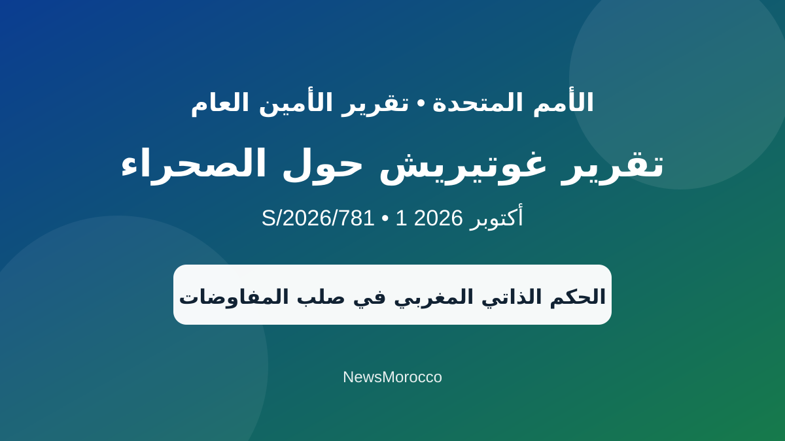

تقرير غوتيريش حول الصحراء يكشف تطورات جديدة في مسار المفاوضات
كشف التقرير الجديد للأمين العام للأمم المتحدة أنطونيو غوتيريش، المؤرخ في 1 أكتوبر 2026 والحامل للرمز S/2026/781، عن تطورات مهمة في المسار السياسي لقضية الصحراء.
ويشير التقرير إلى أن اعتماد قرار مجلس الأمن 2797 أعطى دفعة جديدة للمسار السياسي، وأن ثلاث جولات من المفاوضات المباشرة جرت خلال بداية سنة 2026 بمشاركة المغرب وجبهة البوليساريو والجزائر وموريتانيا.
كما تناولت المفاوضات أفكاراً مرتبطة بإمكانية إنشاء مجلس انتقالي ومرحلة انتقالية، إلى جانب دور الأطراف الدولية وضمانات تنفيذ أي اتفاق مستقبلي، فضلاً عن قضايا الموارد والمصالحة والأمن ونزع السلاح.
وفي المقابل، لا يعني التقرير أن التسوية النهائية قد حُسمت. فالوثيقة تعرض مساراً تفاوضياً ما تزال تفاصيله محل نقاش بين الأطراف، كما أن أي ترتيبات انتقالية أو مجلس انتقالي لم يتم إقرارهما بشكل نهائي.
ملاحظة تحريرية مهمة: مجلس الأمن أدرج الوثيقة S/2026/781 في سجل تقارير الأمين العام بتاريخ 1 أكتوبر 2026، لكن الأمم المتحدة أوضحت، وفق ما نقلته تيلكيل عن فريقها الرقمي، أن النسخة الرسمية الكاملة من التقرير متوقع نشرها في 16 أكتوبر. لذلك نتعامل مع النص المتداول حالياً باعتباره نسخة مسبقة (advance copy)، وليس منشوراً أممياً نهائياً متاحاً للعامة بعد.
مجلس الأمن التابع للأمم المتحدة: سجل تقارير الأمين العام لسنة 2026، الوثيقة S/2026/781.
تيلكيل عربي: توضيح فريق الأمم المتحدة الرقمي بشأن موعد نشر النسخة الرسمية.
NewsMorocco: تحرير وتلخيص للمعلومات المتاحة حتى 5 أكتوبر 2026.